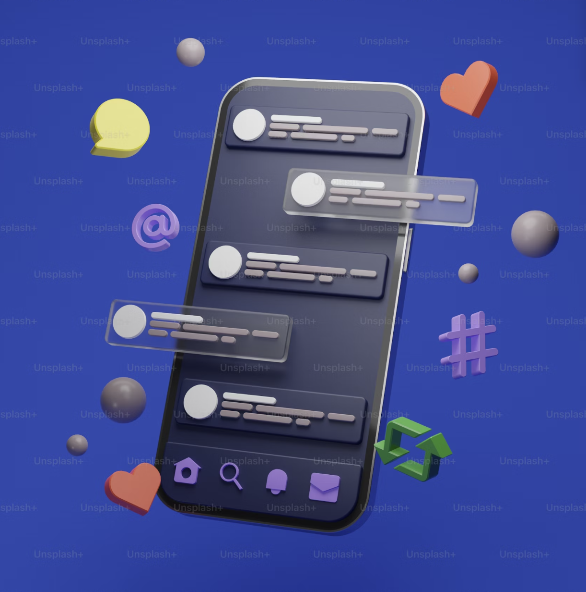
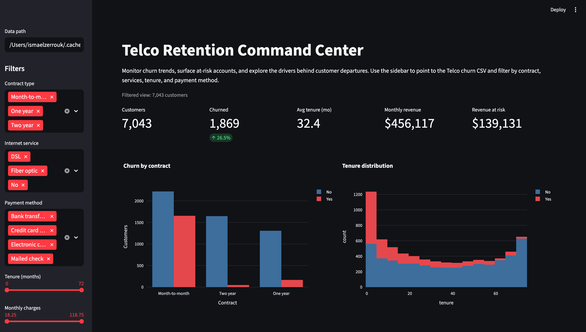
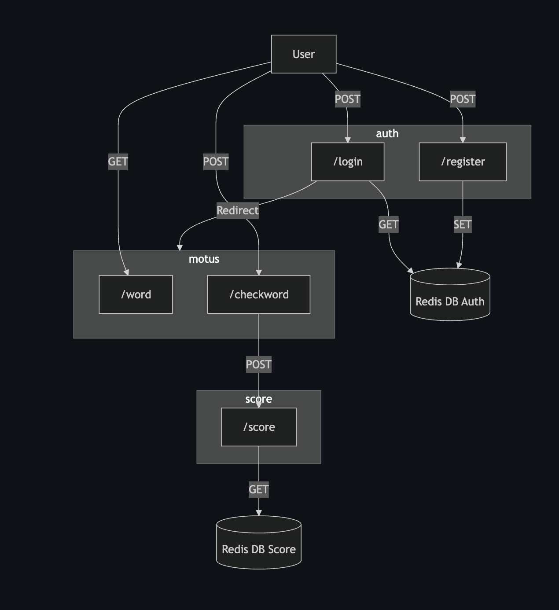
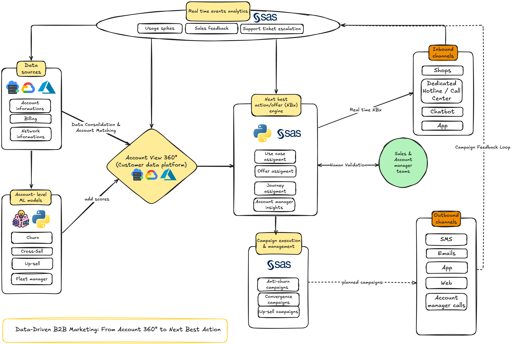
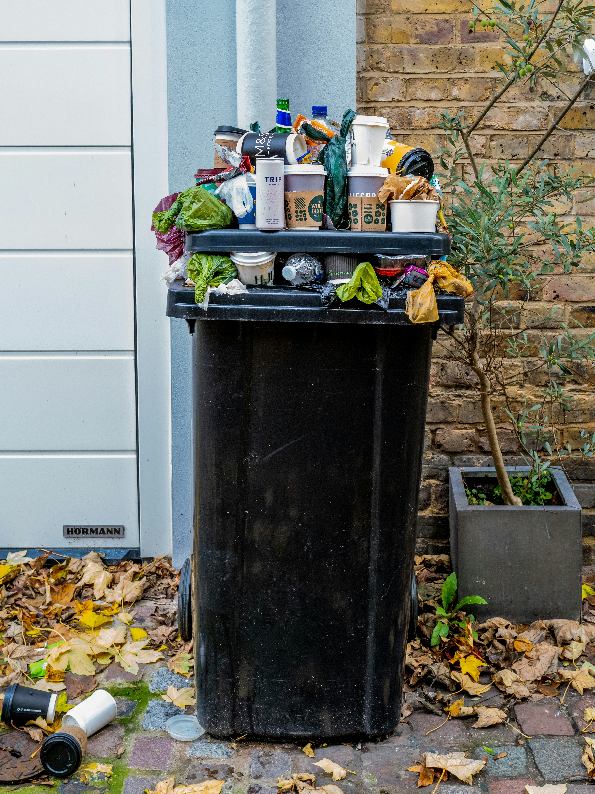
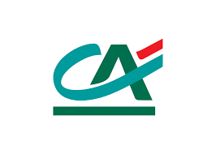
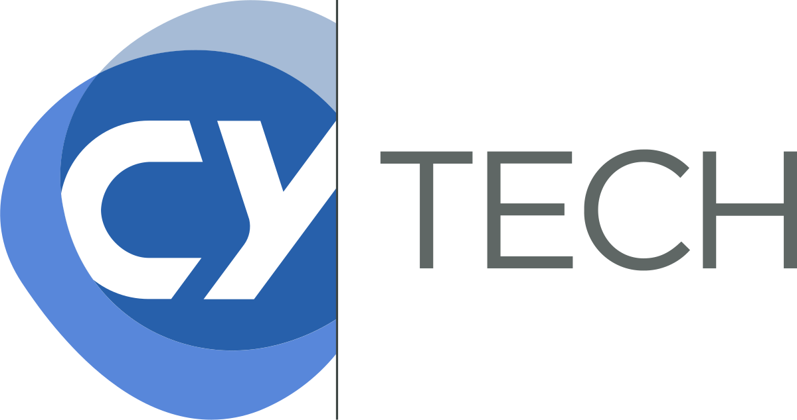

Business Data Analyst
Orange Business
Analyse des données marketing B2B, segmentation client, reporting et modélisation de la rétention et du churn.
> Data Scientist & Business Analyst
Je transforme des données complexes en insights actionnables, via du machine learning, du reporting BI et de l'analyse marketing B2B.
À propos
Ingénieur en Data Science diplômé de CY Tech, passionné par l'analyse de données, l'automatisation et le machine learning.
Actuellement Business Data Analyst chez Orange Business à Bruxelles, je travaille au sein de l'équipe Marketing B2B Customer Value Management. Je développe des modèles de segmentation client, j'analyse le churn et je construis des dashboards pour les décideurs métier.
Parcours
Orange Business
Analyse des données marketing B2B, segmentation client, reporting et modélisation de la rétention et du churn.
Crédit Agricole (CAGIP)
Développement d'un tableau de bord prédictif avec Power BI et Python pour la gestion des équipements informatiques, intégrant des modèles de prévision avec Prophet (Meta).
ITS Indonésie
Développement de modèles NLP (BERT, NER) pour la classification automatique de tweets en 5 catégories — F1-score de 93%.
Formation
2021 — 2024
CY Tech — Mathématiques appliquées
Spécialisation IA : Data Science, Machine Learning, Deep Learning, Big Data, Cloud, NLP, Microservices, POO.
2019 — 2021
CY Tech — Cycle préparatoire
Formation intensive en mathématiques, informatique et sciences de l'ingénieur.
2016 — 2019
Lycée Jules Verne
Mention Très Bien, spécialité sciences.
Stack technique
Réalisations

Modèle BERT fine-tuné pour la détection de commentaires toxiques sur les réseaux sociaux.
Voir sur GitHub
Modèle ML pour anticiper le churn clients dans les télécoms, avec dashboard Streamlit interactif (Random Forest, 85% de précision).
Voir sur GitHubAlgorithmes NSGA-II pour la planification de tâches dans des environnements Cloud/Fog computing.
Voir sur GitHub
Jeu Motus en Node.js avec architecture microservices, Docker Compose et Redis pour la gestion des sessions et scores.
Voir sur GitHub
Architecture end-to-end pour le marketing data B2B : ingestion, transformation et activation des données clients.

Classification automatique de 19 types de déchets avec un réseau de neurones convolutif (projet Neovision AI).
Collaborations


Contact
Une opportunité, un projet data, ou simplement envie d'échanger ? N'hésitez pas à me contacter directement.